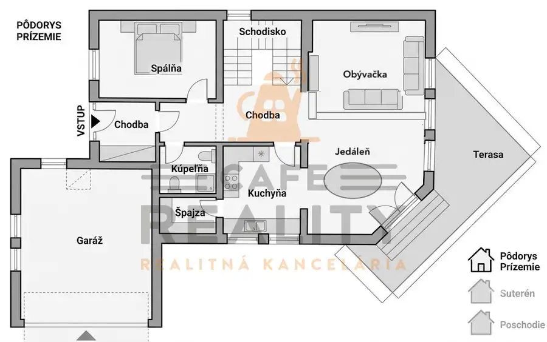
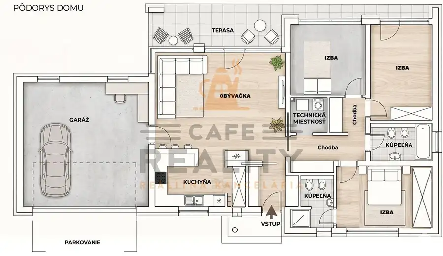

Na predaj chalupa, pozemok 1891 m2, obec Šumiac, okr. Brezno
Šumiac
- Dispozícia5-izbový
- Plocha160 m²
- Poschodie0. z 1
- Stavpo rekonštrukcii
- Vlastníctvoosobné
O nehnuteľnosti
Na predaj krásna zrekonštruovaná drevenica z roku 1930 na peknom rozľahlom pozemku o veľkosti 1891 m2 v obci Šumiac, okres Brezno, pod Kráľovou Hoľou.
Lokalita obce sa nachádza v peknom prostredí Nízkych Tatier - Telgárt. Drevenica je dvojpodlažná, starostlivo udržiavaná, postavená na veľkom pozemku o rozlohe 1891 m2 s prístupom po celoročne udržiavanej asfaltovej ceste. Parkovanie je možné na pozemku a pred vstupom na vyhradených miestach.
Aktuálne je využívaná ako investičná rekreačná nehnuteľnosť s príjemným ročným výnosom (možnosť prenechania značky ubytovania a histórie a soc. sietí). Možnosť tiež ponechania kompletného zariadenia a vybavenia chalupy.
Drevenica je vedená ako rodinný dom s možnosťou financovania cez hypotekárny úver s prístupom po obecnej komunikácii. Na priestrannom pozemku je možnosť výstavby prípadne ďaľšej stavby.
Pozostáva: z priedomia, zo vstupnej chodby s kuchyňou s kachlovou pecou so šporákom a jedálenským kútom, kúpeľne so sprchovým kútom a WC, priestrannej spoločenskej miestnosti so sedačkou, stolmi a peletovou automatickou pecou. Na poschodí sa nachádzajú tri izby. Celkovo je možné ubytovať 8 až 10 ľudí.
Chalupa bola kompletne zrekonštruovaná, menené komplentne elektrické a vodovodné rozvody, menené okná, nové bezpečnostné vchodové dvere s vonkajšími dvojkrídlovými záklopnými, strecha, ošetrenie dreva. Kúrenie je kombinované: elektrika, tuhé palivo v kuchyni, peletová pec v spoločenskej miestnosti. Voda je obecná, na pozemku je studňa, odpad je napojedný na obecnú kanalizáciu. Kamerový a bezpečnostný systém.
Na priestrannom pozemku k dispozícii: kúpacia kaďa, sedenie za domom, detská hojdačka, detské ihrisko, pieskovisko, šmýkačka, preliezka, dreváreň. Moýžnosť dobudovania ihriska, prípadne bazénu.
V blízkosti: cykloturistické chodníky z obce (Najvyššia súvislá asfaltová cyklotrasa v strednej Európe s plánovaným dokončením v roku 2026 s prevýšením vyše 1 000 metrov na Kráľovú Holu), skialpové trate. Lyžiarske stredisko SKI Telgart (15 min. autom), železničný viadukt Telgárt, Dobšinská ľadová jaskyňa (25 min. autom), slovenská cesta ROUTE 66 a množstvo ďaľšieho vyžitia.
Región Horehronia a Nízkych Tatier ponúka milovníkom prírody a aktívneho oddychu množstvo možností.
Celoročné aktivity v okolí - v lete - turistika, cykloturistika na Kráľovú Hoľu vedie turistický chodník po nenáročnej trase, cca v polke je horská chata pod Kráľovou Hoľou. V zime - skialpovanie, zimná cykloturistika, lyžovanie.
V obci Šumiac sa usporadúva množstvo kultúrnych a spoločenských podujatí počas roka. Obec má potrebnú občiansku vybavenosť, ochody, reštaurácie, požičovňa bicyklov a športového vybavenia. Požičovňa bicyklov a elektrobikov v letnej sezóne, požičiavanie skialpového vybavenia, fatbikov s hrotmi v zimnej sezóne.
Cena je uvedená vrátane provízie, kompletného právneho a poradenského servisu. Chalupa je kúpou voľná.
V okolí množstvo aktivít: Vodopád pod Orlovou, vrch Orlová, Gindura alebo Stolica. Len niekoľko kilometrov je vzdialený prameň rieky Hron a známa technická pamiatka Chmarošský viadukt. V blízkosti sa nachádza aj krásna Dobšinská ľadová jaskyňa, Hrad Muráň, Sysľovisko, Muránska planina a Palcmanská maša, kde si užijete slnečné letné dni pri kúpaní a vodných športoch. Ranč Pod Ostrou Skalou. V zime si skvelú lyžovačku vychutnáte v Ski Telgárt, Ski Mlynky, v lyžiarskom stredisku Vernár a mnohých ďalších.
Obec sa nachádza v blízkosti: Telgárt, Červená Skala, Zlatno, Vaľkovňa, Nová Maša, Pohorelská Maša, Pohorelá, Závadka nad Hronom, Heľpa, Polomka, Muránska Huta, Predná Hora, Muránska Lehota, Muránska Dlhá Lúka, Pusté Pole, Revúca, Brezno
Parametre
| Rozloha pozemku | 1891 m² |
|---|---|
| Zastavaná plocha | 130 m² |
| Celková rozloha | 1891 m² |
| Úžitková plocha | 160 m² |
| Poschodie | prízemie |
| Počet poschodí | 1 |
| Počet izieb | 5 |
| Vlastníctvo | osobné |
| Stav | po rekonštrukcii |
| Odvoz odpadu | áno - separovaný |
| Voda | verejný vodovod |
| El. napätie | 230/400V |
| Plyn | nie |
| Kanalizácia | áno |
| Internet | lokálny poskytovateľ |
| Kúpeľňa | sprchovací kút |
| Vykurovanie | vlastné – kombinované |
| Terasa | áno |
| Parkovanie | vlastné vyhradené |
| Inžinierske siete | áno |
| Postavené z | drevostavba |
| Zariadenie | zariadený |
| Strecha | po rekonštrukcii |
| Krb | áno |
| Energetický certifikát | nie |
| Predzáhradka | áno |
| Bezbariérový prístup | áno |
| Okná | drevené |
| Terén | mierny svah |
| Prístupová cesta | asfaltová cesta |
| Dátum zverejnenia | 4. 8. 2026 |
Kde to je
Mohlo by Vás zaujímať

Rodinné domy10 850 000 €Na predaj 7 izbový rodinný dom Bratislava, Rača, Potočná ulica Rača, Bratislava 7-izbový275 m² Objekt rodinného domu sa nachádza v súkromnej ulici v kľudnej časti Rače s výhľadom na mesto, na peknom udržiavanom pozemku o veľkosti 605 m2 so…
Rodinné domy10 1 200 €Na prenájom 4 izbový rodinný dom, 140 m2, Pata, Lipová ulica, okr. GA Pata 4-izbový160 m² Dom je priestranný bungalov s dobrou dispozíciou o veľkosti podlahovej plochy 140 m2. Prenajíma sa zariadený a vybavený. Ide o prízemný bungalov,…